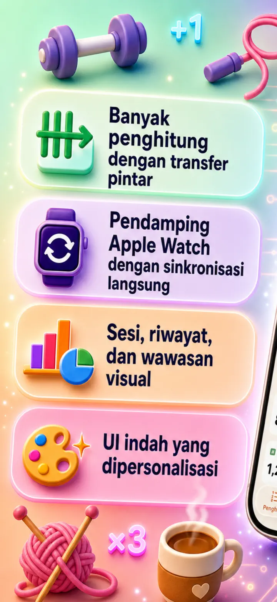
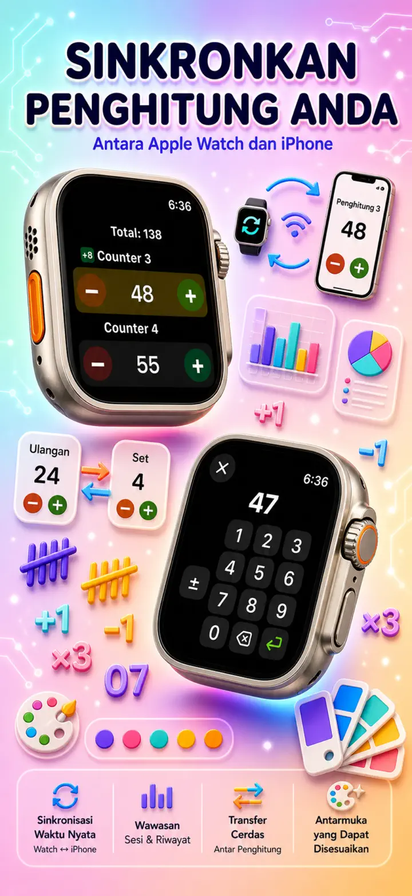
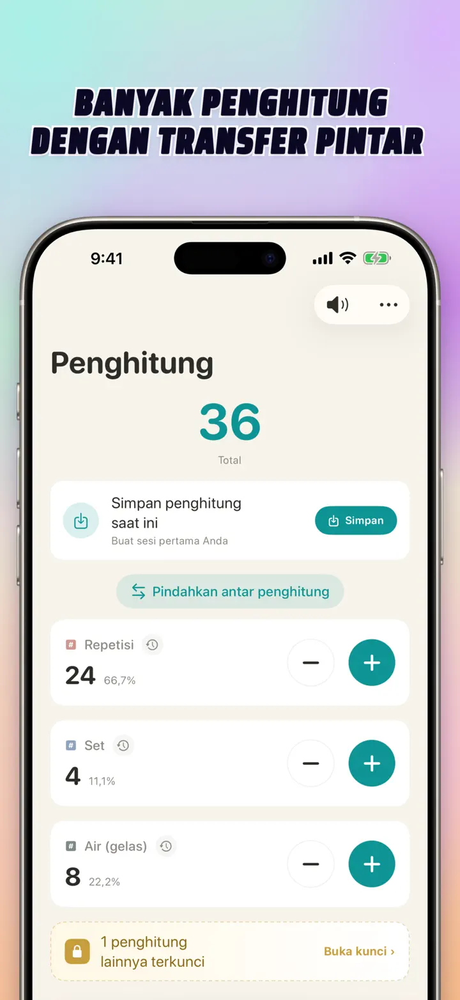
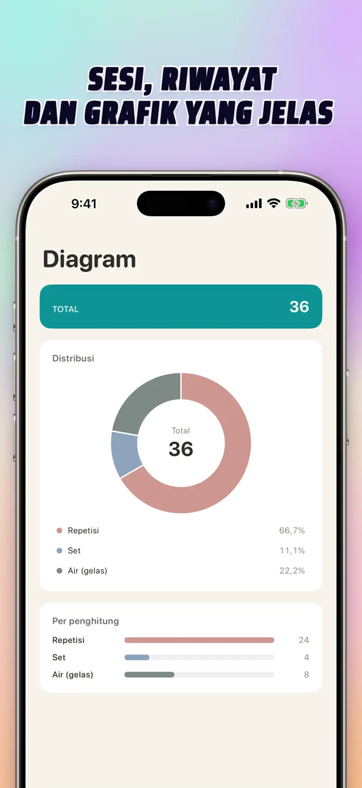
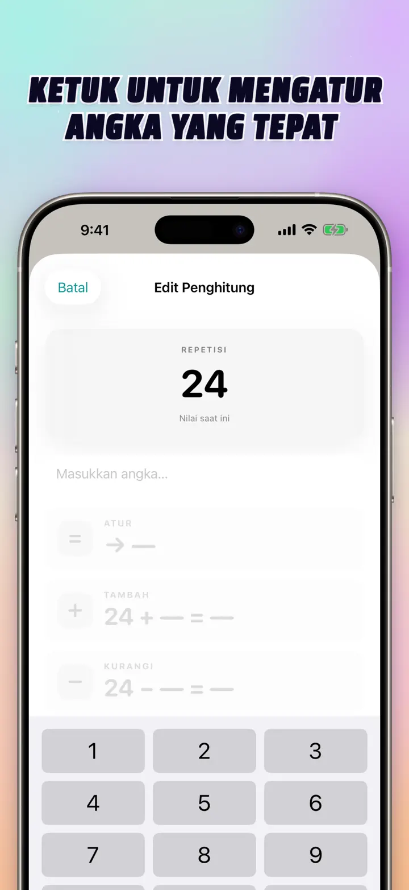
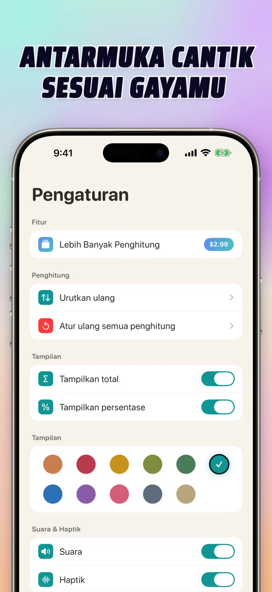
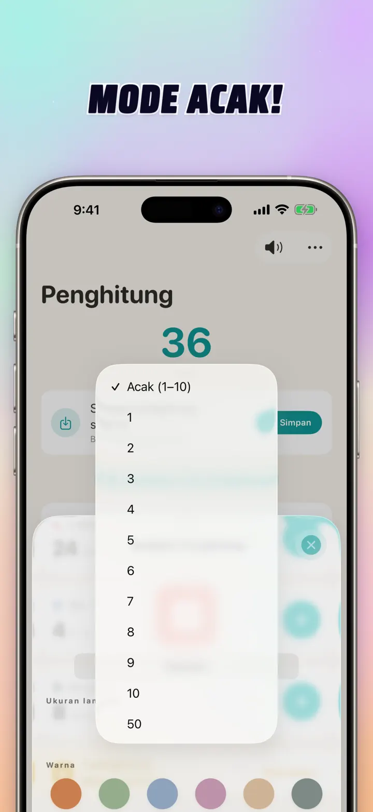

Penghitung 123
Sync Watch, Clicker & Skor
Baru: widget Layar Utama — ketuk +/- di widget tanpa membuka aplikasi. Penghitung dan clicker dengan sync Apple Watch, mode acak, grafik, dan riwayat.
Unduh di App Store
Tentang aplikasi
Penghitung 123 adalah penghitung cepat dan fleksibel untuk iPhone, iPad, dan Apple Watch. Beri nama penghitung, pilih warna, dan hitung apa saja — set latihan, baris rajutan, tasbih, poin kelas, stok, skor pertandingan. Semua tersimpan lokal di perangkat dan bekerja offline.
PENGHITUNG KUSTOM
- Buat penghitung terpisah untuk aktivitas, game, rutinitas, atau daftar
- Nama dan warna khusus untuk tiap penghitung
- Seret untuk menyusun ulang
- Tekan dan tahan untuk menghitung cepat berturut-turut
- Sepenuhnya offline — tanpa daftar, tanpa cloud
INPUT LANGSUNG & OPERASI MASSAL
- Ketuk penghitung untuk menetapkan nilai awal langsung — tanpa nol dulu
- +/- massal: ubah penghitung dengan angka berapa pun sekali ketuk
- Pindah: pindahkan nilai dari satu penghitung ke penghitung lain tanpa operasi ganda
- Langkah kustom: satu ketuk menambah 1, 5, 10, 100 atau apa pun yang kamu pilih
- Pratinjau langsung setiap perubahan
MODE ACAK
- Biarkan penghitung memilih nilai baru 1 sampai 10 setiap ketukan
- Tambah atau kurangi nilai acak dengan tombol + dan -
- Cocok untuk latihan, game, hadiah, aktivitas kelas, dan rutinitas
- Setiap ketukan acak dicatat di riwayat penghitung
TOTAL & GRAFIK
- Total semua penghitung dalam sekali lihat
- Tampilan persentase: seberapa besar kontribusi tiap penghitung
- Grafik batang interaktif — beralih antara nilai (#) dan persen (%)
- Urutkan berdasar nilai untuk peringkat instan
RIWAYAT & BAGIKAN
- Riwayat lengkap: setiap penambahan, pengurangan, dan edit tercatat
- Simpan set penghitung dan muat ulang kapan saja
- Bagikan konfigurasi ke tim, murid, atau teman
- Lihat riwayat sebagai log bertanggal, sesi berkelompok, atau statistik harian/mingguan/bulanan
SYNC LANGSUNG DENGAN APPLE WATCH
- Ubah penghitung di iPhone atau Apple Watch, keduanya tetap sinkron
- Aplikasi watchOS benar-benar native — bukan sekadar pendamping
- Nama, warna, dan nilai tersinkron di pergelangan
- Ketuk untuk menghitung, tahan untuk mengulang — langsung dari jam
- Bekerja sendiri saat iPhone tidak di dekatmu
UNTUK iPhone, iPad & APPLE WATCH
- Tata letak adaptif untuk semua ukuran layar
- iPad menampilkan lebih banyak penghitung sekaligus, mendukung Split View
- Privasi dulu: penyimpanan lokal, tanpa cloud, tanpa akun
COCOK UNTUK
- Set dan repetisi di gym
- Baris rajutan dan jeratan kait
- Tasbih, rosario, manik doa
- Poin kelas dan presensi
- Bulutangkis, voli, basket — skor cepat
- Tenis meja
- Stok dan kelola gudang
- Catur, kartu, remi, domino
- Putaran kolam dan lintasan
- Pengamatan burung
- Hitung peserta di acara
- Pelacakan kebiasaan dan tujuan
Unduh Penghitung 123 dan buat setiap penghitungan jadi mudah — jelas, cepat, privat.
Kebijakan Privasi: https://masawata.net/privacy-policy.html Ketentuan Penggunaan: https://www.apple.com/legal/internet-services/itunes/dev/stdeula/
Tangkapan layar






Penghitung 123
Baru: widget Layar Utama — ketuk +/- di widget tanpa membuka aplikasi. Penghitung dan clicker dengan sync Apple Watch, mode acak, grafik, dan riwayat.
Unduh di App Store